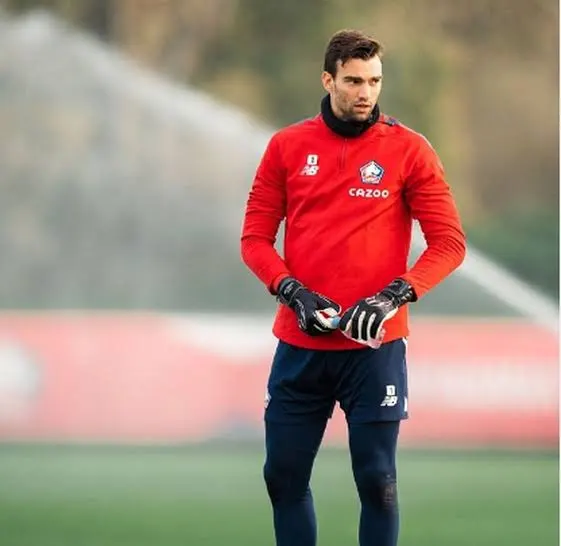

01
01
Goleiro
Léo Jardim
É o responsável por proteger a meta vascaína. Atua realizando defesas, orientando a linha defensiva e iniciando a construção das jogadas desde a defesa.


O Gigante da Colina • Futebol • Tradição • Paixão
Conheça alguns dos jogadores que fazem parte do elenco do Vasco da Gama. Cada atleta possui uma função importante dentro do sistema da equipe, desde a proteção do gol até a criação e finalização das jogadas.
01
É o responsável por proteger a meta vascaína. Atua realizando defesas, orientando a linha defensiva e iniciando a construção das jogadas desde a defesa.

 02
02
Atua pela lateral direita. Sua função envolve defender o corredor, apoiar o ataque e criar jogadas pelos lados do campo.
 04
04
Atua no centro da defesa. É responsável por marcar os atacantes adversários, cortar jogadas perigosas e ajudar na saída de bola.
 06
06
Joga pelo lado esquerdo. Participa tanto da marcação quanto das ações ofensivas, podendo avançar e colaborar na criação de oportunidades.
 05
05
Atua à frente da defesa. Ajuda na recuperação da bola, protege o setor defensivo e participa da distribuição das jogadas.
 03
03
Ajuda a conectar defesa e ataque. Participa da troca de passes, da marcação e da organização do meio-campo.
 23
23
Atua no meio-campo, contribuindo para a circulação da bola, recuperação de posse e chegada ao ataque.
 28
28
Atua pelo setor ofensivo. Pode buscar o jogo pelos lados, driblar, criar oportunidades e participar das finalizações.
 11
11
Atua no ataque buscando velocidade e profundidade. Pode participar das jogadas pelos lados e chegar à área para finalizar.
 9
9
Atua no setor ofensivo procurando espaços para finalizar. Também pode participar da construção das jogadas e pressionar a defesa adversária.
19
Atua na frente e busca aproveitar as oportunidades de finalização. Também participa da pressão sobre a defesa adversária.